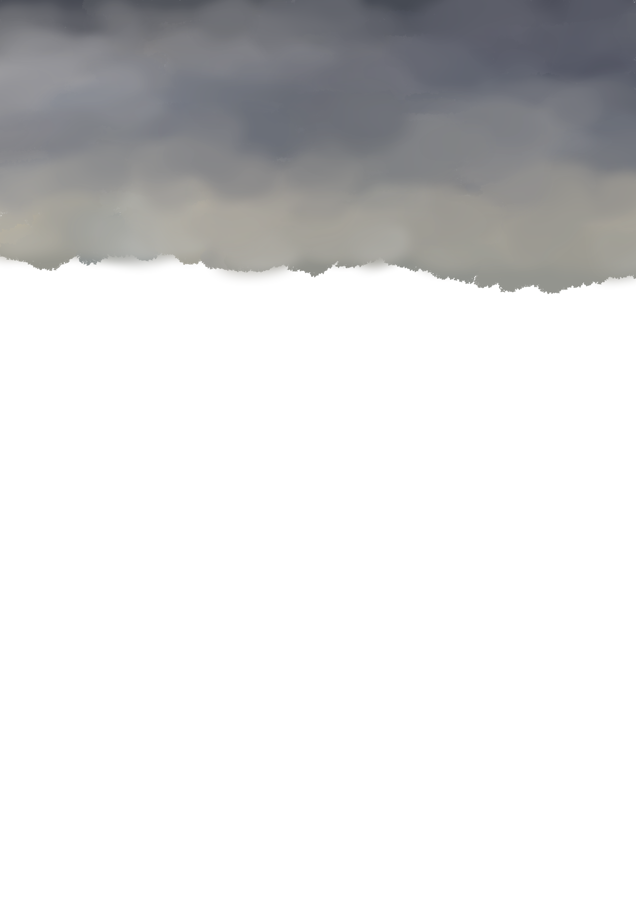
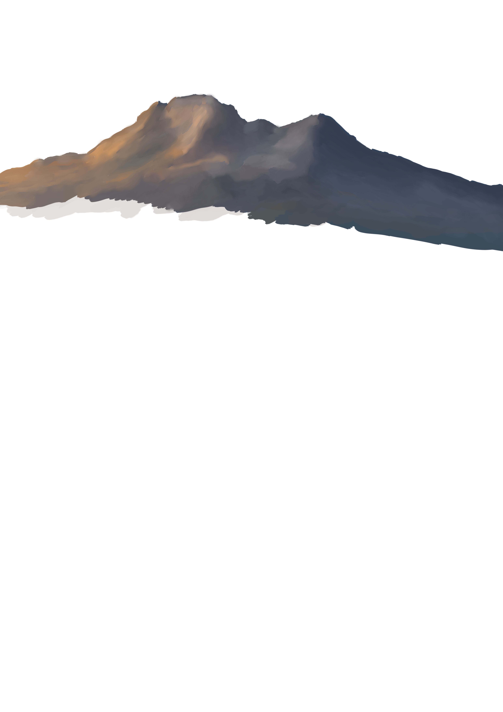
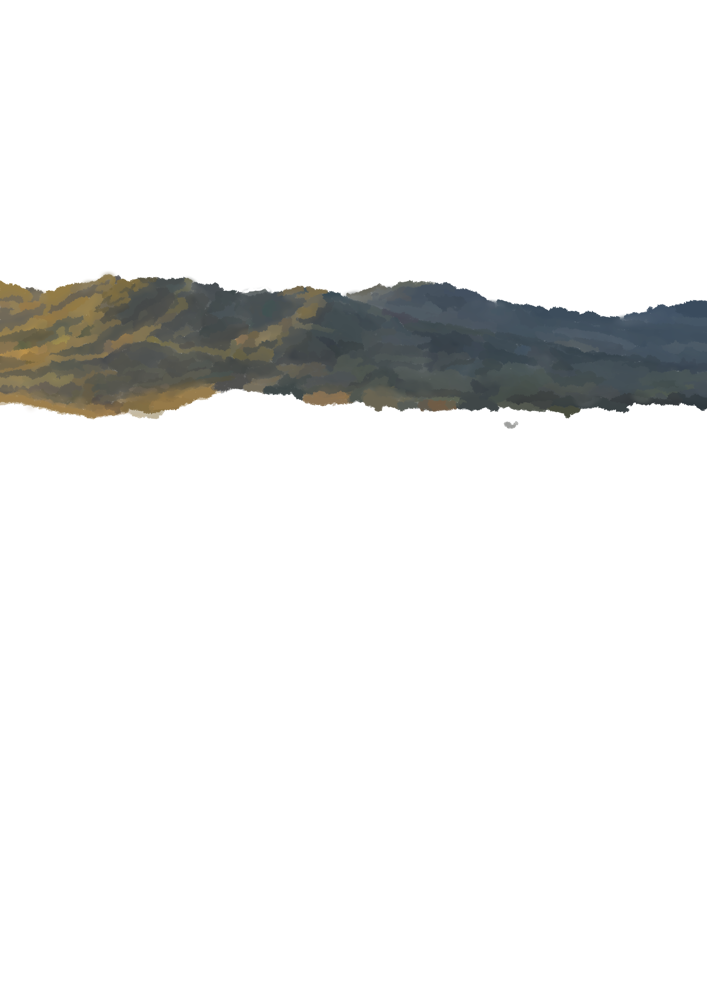
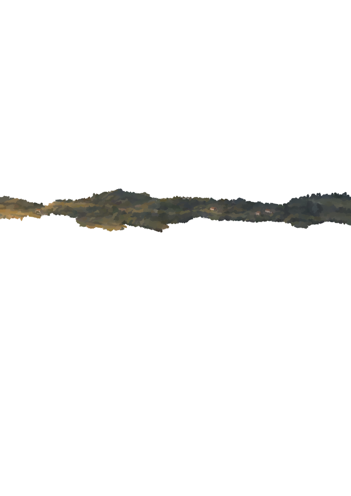
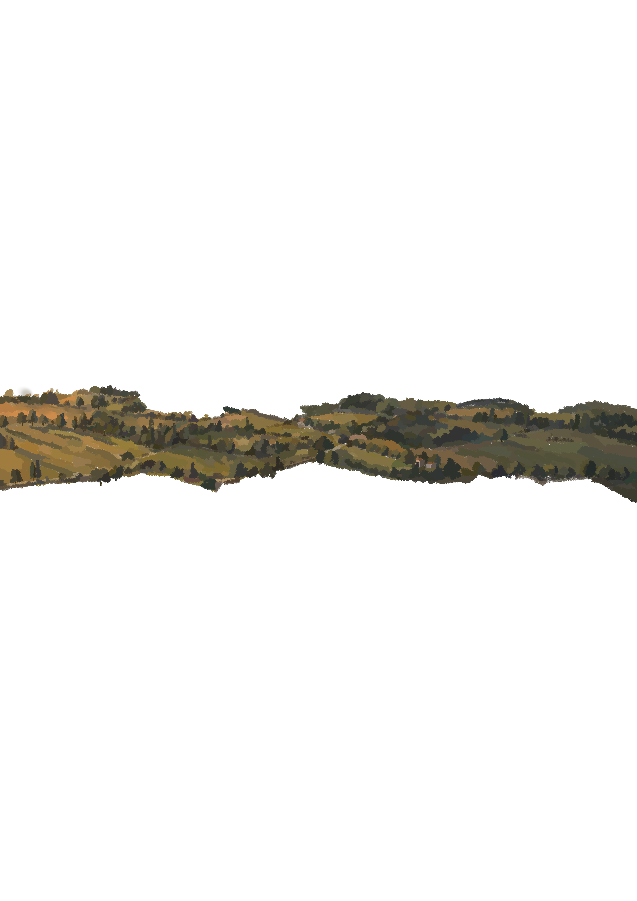
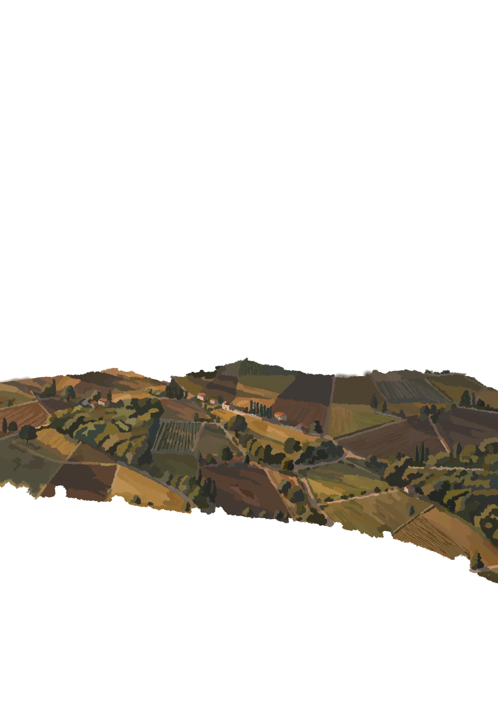
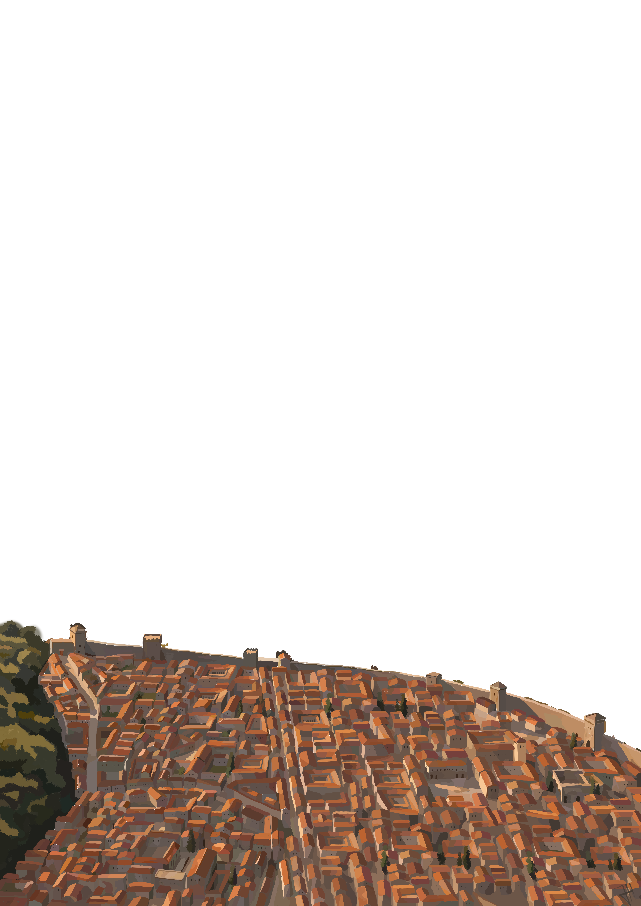
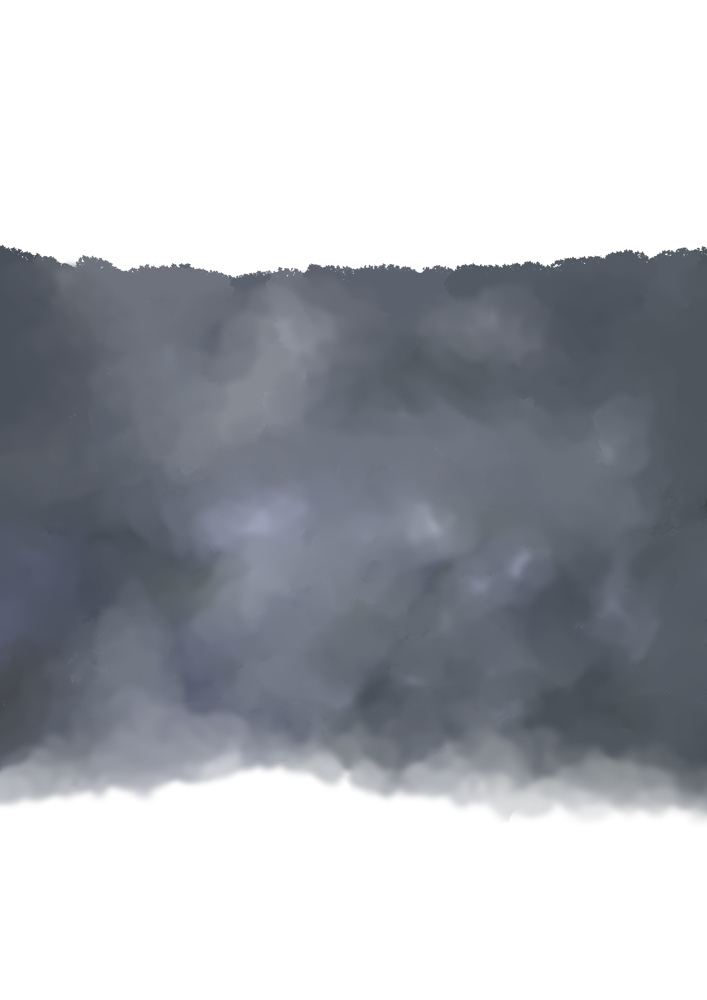
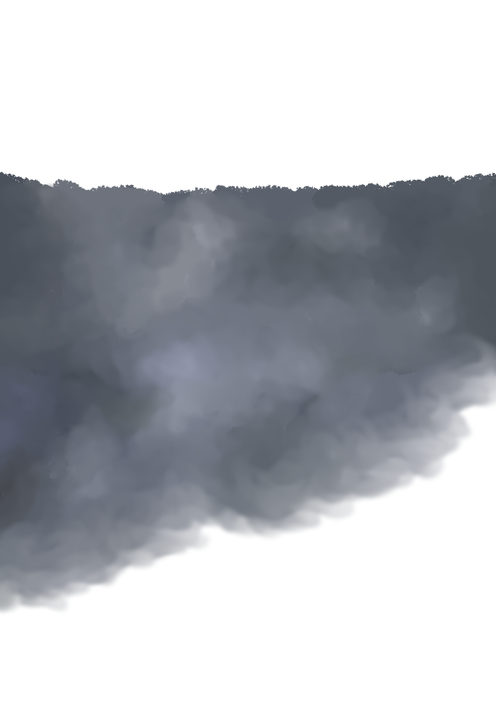
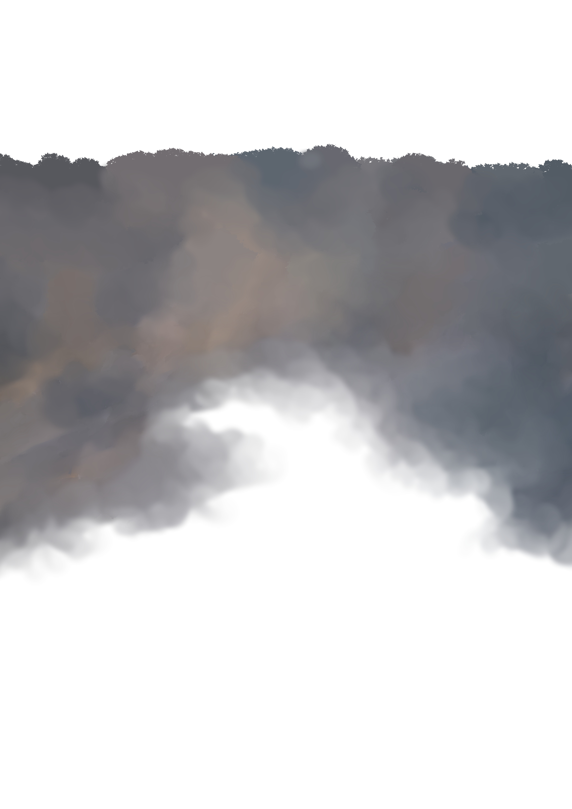
Hier können später ein paar kurze Informationen zum Projekt stehen.
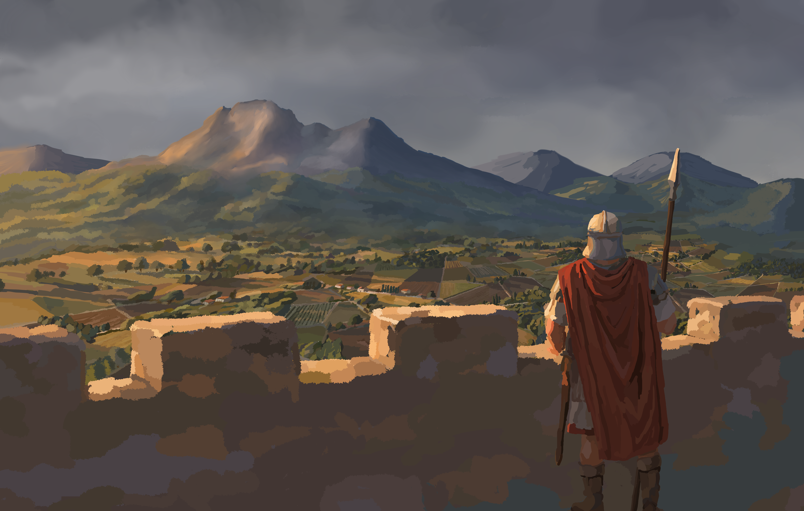
Pompeji, im Jahr 79 n. Chr.
Auf der Stadtmauer wacht Gaius, ein altgedienter Veteran.
Noch ahnt niemand, dass der Vesuv bald über die Stadt hereinbrechen wird.